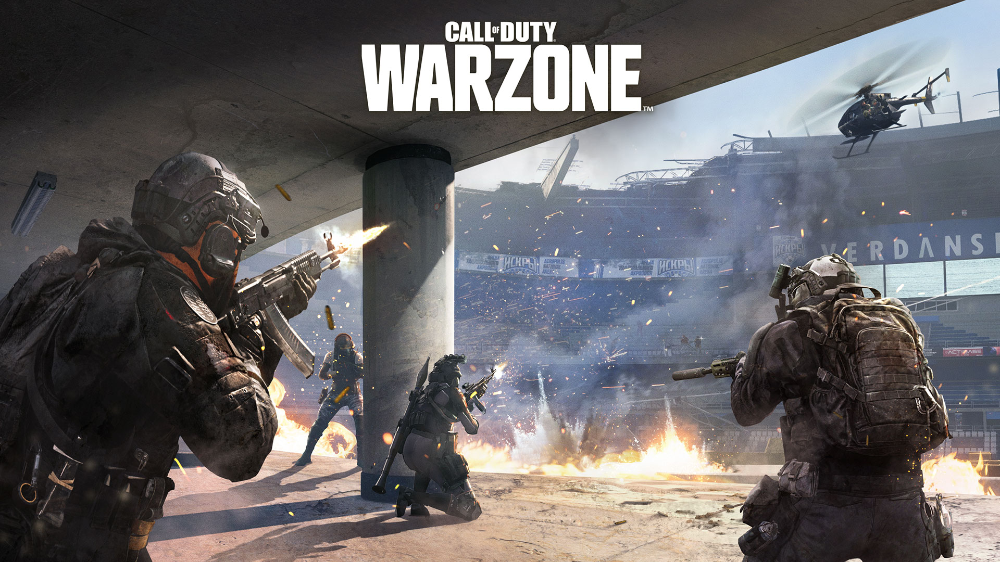
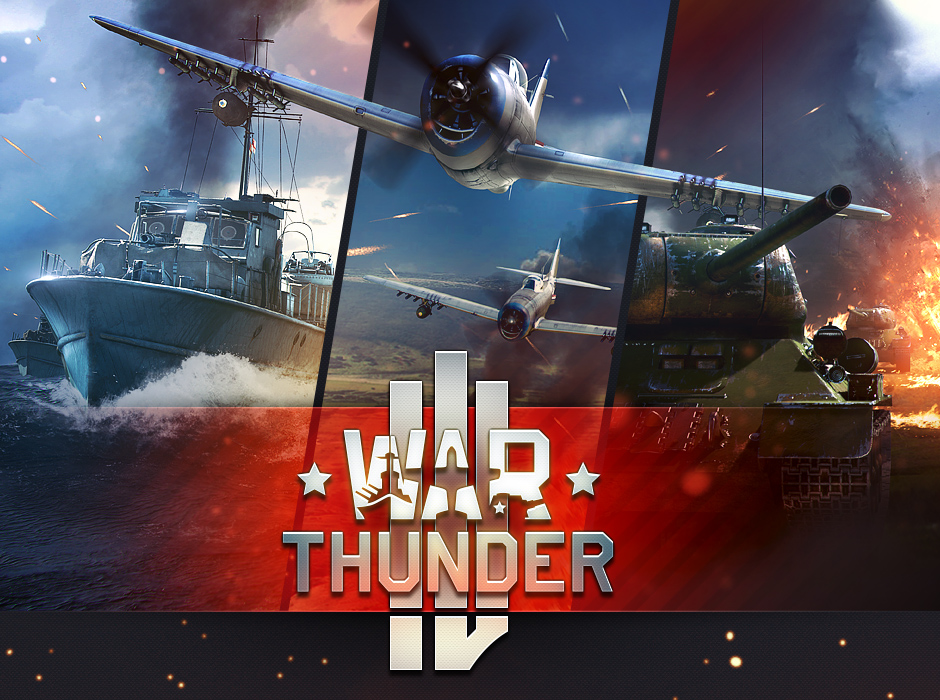

img{
padding-bottom: 40px;
}
Меня зовут Владимир. Мне 12 лет. Я учусь в школе №1 им. Лермонтова. Люблю школу и мне нравится программирование. Так же люблю поиграть в игры.
Моя любимая игра Call of Duty Warzone. Может она вам тоже понравиться?...
Держите.
Что такое HTML
Это игра в жанре шутер.Она очень динамичная,ведь ты можешь встретить противника в каждом доме.Все действия происходят на карте VERDANSK.
Это очень большая карта. На ней много разного транспорта: вертолёты, грузовики, вездеходы и т.д.
В игре присутствует большое колличество разного оружия: от оружий Второй Мировой войны: винтовка Мосина, до современных:SKS- самозарядный карабин симонова.
Так что она вам не может не понравиться.


Но WarZone может не всем понравится. Может кто-то из Вас заблудившийся Танкист, Лётчик или Командир подводной лодки/судмарины.
ТОГДА ВАМ В WAR THUNDER!!!
War Thunder – это игра из серии военных ММО-игр. Игра War Thunder охватывает мир боевой авиации, бронетехники и флот времен Второй мировой войны,
на данный момент пока успешно в режиме ЗБТ работает сторона боевой авиации. Это игра с офигенной графикой и спец-эффектами. В ней очень много разной техники: От технники Второй Мировой войны(Т-26 или самолёта Ла-5)
до сомременной(Т-80БВМ, МиГ-23М) В игре выходит много обновлений поэтому заработать любую технику легко, почти:) Так что заходите и наслаждайтесь игрой. Мой ник Vovan_67.
Держите.